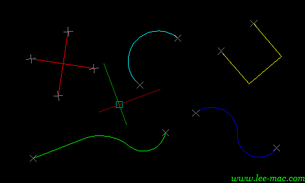
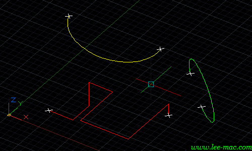

Double Extend
This page is delivered for consistency purposes only, as part of the LeeMac sample module of DynALisp, which shows how DynALisp turns existing AutoLISP programs into a module. The program and its description are the work of Lee Mac, who keeps all the credit for them. The original page, with the latest version, is on Lee Mac's website: https://lee-mac.com/doubleextend.html
| Function Syntax | LM-DoubleExtend – original syntax: dex (see aliases) |
| Current Version | 1.0 |
| Compatible with AutoCAD for Mac? | No |
| Compatible with AutoCAD LT? | Yes |
| Original Page | lee-mac.com/doubleextend.html |
Program Description
This program allows the user to extend both ends of all lines, arcs & polylines in a selection by a given amount.
Upon issuing the command syntax dex (Double Extend) at the AutoCAD command-line, the user is first prompted to specify the amount by which to extend the objects at both ends. At this prompt, the program will offer the last entered extension value as a default option; this default value will also be remembered between drawing sessions.
Following a valid response, the program will then prompt the user to make a selection of lines, arcs, open 2D polylines (both light & heavy), or open 3D polylines whose start & end points (or start & end segments) are to be lengthened by the given amount. As shown by the two demonstrations below, the program is compatible with all of the aforementioned objects contructed in all UCS planes, and with polylines containing arc segments.
The program will automatically ignore object end points for which an extension by the specified distance is not possible, for example, if extending both ends of an arc by the given distance will cause the end points to meet or overlap.
2D Demonstration

3D Demonstration

Bundled program notes
;;-------------------------=={ Double Extend }==------------------------;;
;; ;;
;; This program allows the user to extend both ends of all lines, ;;
;; arcs & polylines in a selection by a given amount. ;;
;; ;;
;; Upon issuing the command syntax 'dex' (Double Extend) at the ;;
;; AutoCAD command-line, the user is first prompted to specify the ;;
;; amount by which to extend the objects at both ends. At this prompt, ;;
;; the program will offer the last entered extension value as a ;;
;; default option; this default value will also be remembered between ;;
;; drawing sessions. ;;
;; ;;
;; Following a valid response, the program will then prompt the user ;;
;; to make a selection of lines, arcs, open 2D polylines (both light ;;
;; & heavy), or open 3D polylines whose start & end points (or start ;;
;; & end segments) are to be lengthened by the given amount. ;;
;; ;;
;; The program is compatible with all of the aforementioned objects ;;
;; contructed in all UCS planes, and with polylines containing arc ;;
;; segments. ;;
;; ;;
;; The program will automatically ignore object end points for which ;;
;; an extension by the specified distance is not possible, for ;;
;; example, if extending both ends of an arc by the given distance ;;
;; will cause the end points to meet or overlap. ;;
;;----------------------------------------------------------------------;;
;; Author: Lee Mac, Copyright © 2015 - www.lee-mac.com ;;
;;----------------------------------------------------------------------;;
;; Version 1.0 - 2015-05-03 ;;
;; ;;
;; First release. ;;
;;----------------------------------------------------------------------;;
Command Names And Aliases
As in every DynALisp module, each program of this sample module has one main command, named LM-*, and the original command names of Lee Mac's page are kept as its aliases: they run the same command, and can be added, renamed or removed in Dyl-Suite (saved in Resources\Aliases.csv).
| Command | Aliases | Name |
|---|---|---|
| LM-DoubleExtend | DEX | Double Extend |